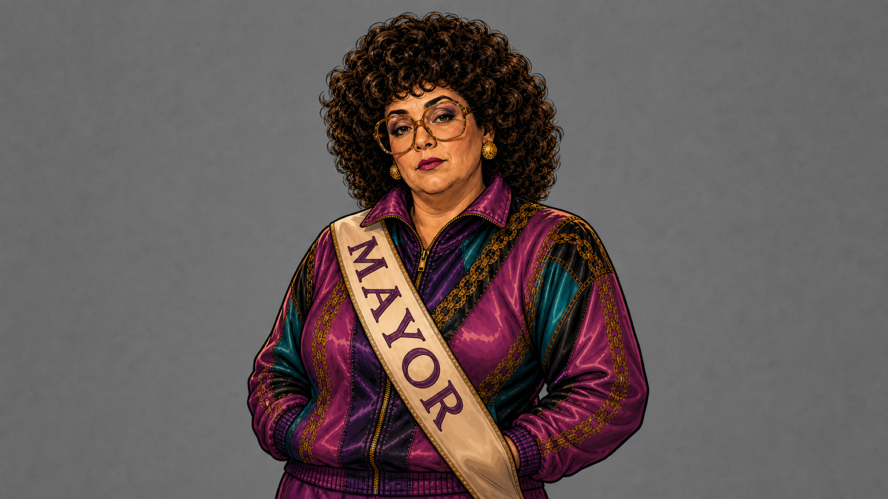
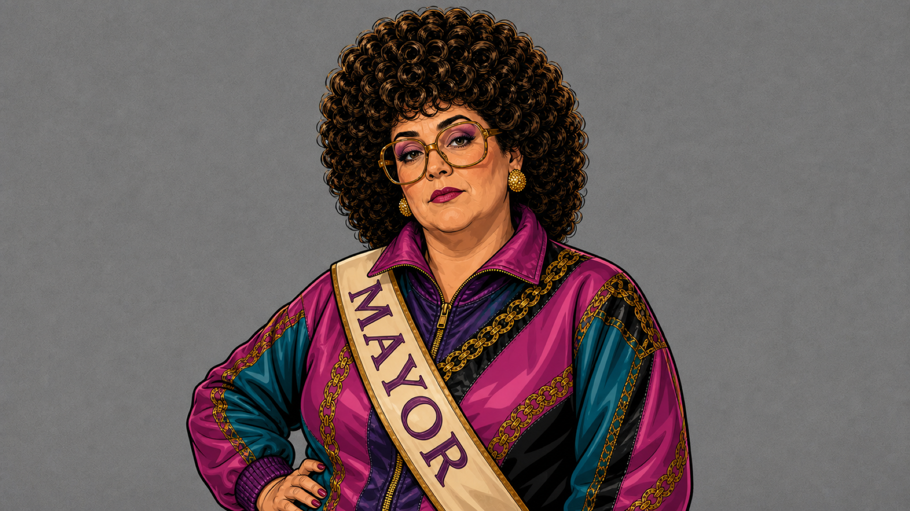
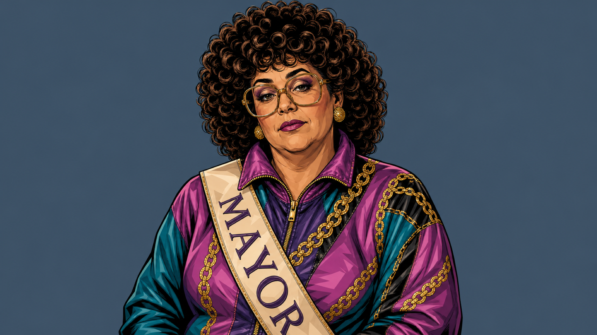
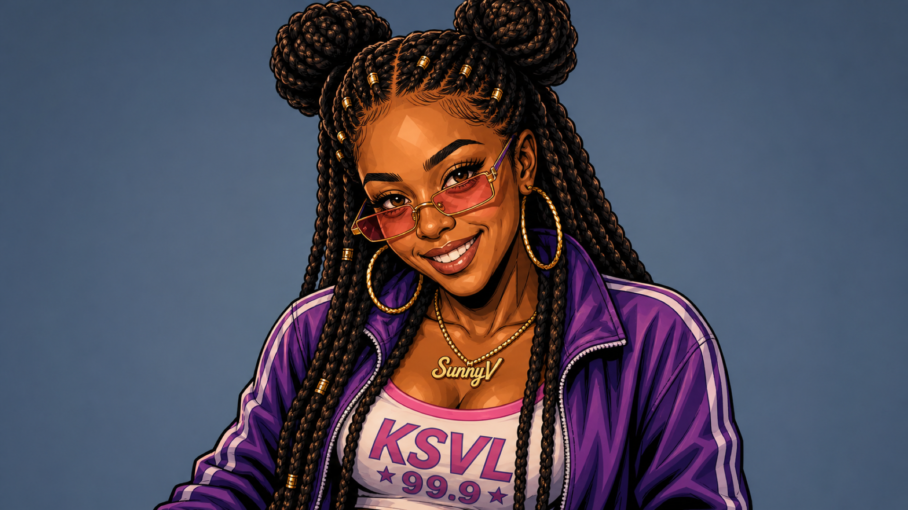
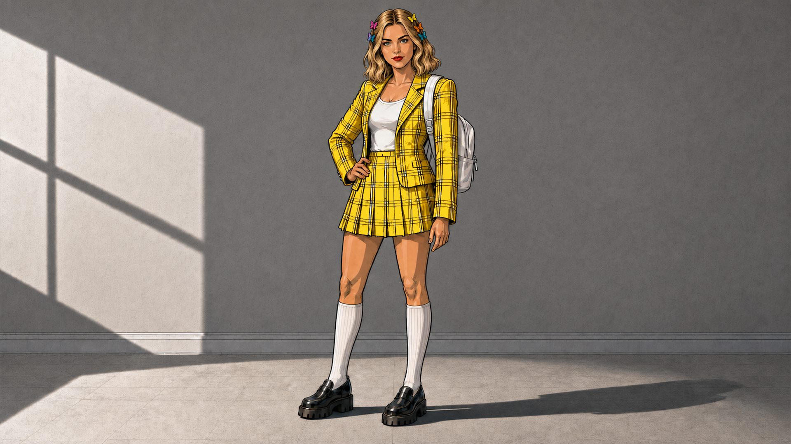

ep04-scene-11b-timnit-comic-v1-raising-alarm-1920.png

ep04-scene-11a-joy-comic-v2-timnit-style-lock-1920.png

ep04-scene-11c-emily-comic-v2-timnit-style-lock-parrot-1920.png

ep04-scene-04-hedy-comic-v2-timnit-style-lock-1920.png

Mayor Deb v1
ep04-character-test-mayor-deb-comic-v1-1920.png

Mayor Deb v2 clean-graphic-novel
ep04-character-test-mayor-deb-comic-v2-clean-graphic-novel-1920.png

Mayor Deb v3 no-halftone
ep04-character-test-mayor-deb-comic-v3-no-halftone-1920.png

DJ SunnyV v1 no-halftone
ep04-character-test-dj-sunnyv-comic-v1-no-halftone-1920.png

Heroine v28 kit
ep04-heroine-comic-reference-03-clueless-3q-sidelight-v28-suit-flat-color-only-1920.png